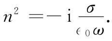

，这会给出相同的结果。
，这会给出相同的结果。上述结果，即关于金属折射率的公式（32.42），预期对不同频率的波的传播会产生很不相同的特性。首先让我们看看在非常低频 时发生的情况。若ω足够小，则式（32.42）可以近似为：
 （32.44）
现在，正如你能够取下式的平方而加以核实 [5] ，
所以对于低频来说，
（32.45）
n的实部与虚部的大小相同。由于n既有这么一个大的虚部，所以波在金属中就会迅速地衰减。参见式（32.36）可知，在z方向行进波的波幅是按照下式递减的：
（32.46）
让我们将此式写成
e-z/δ ， （32.47）
于是，这里的δ是波幅被削弱一个因子e-1 =1/2.72——或约三分之一——时波所经过的距离。这样一种波的波幅作为z的函数，如图32-3所示。由于电磁波将透入金属仅仅这段距离，所以δ称为趋肤深度 。它由下式给出：
图32-3 一个横电磁波的波幅作为进入金属中距离的函数
那么所谓“低”频指的是什么呢？考察式（32.42）可以知道，只要ωτ远小于1，而且 ω∈0 /σ也远小于1，则它便可由式（32.44）做近似——这就是说，我们的低频近似适用的条件为：
和
（32.49）
让我们来看看，对于一种像铜那样的典型金属，与这些条件相当的是什么频率。我们利用式（32.43）算出τ，并再利用观测得的电导率以求得σ/∈0 。从手册中查出下列数据：
σ=5.76×107 （Ωm）-1 ，
原子量=63.5， [6]
密度=8.9 gcm-3 ，
阿伏伽德罗常量=6.02×1023 （克原子量）-1 .
如果我们假定每个原子中有一个自由电子，则每立方米的自由电子数为
所以对低于约1012 Hz的频率（这意思是指，对于自由空间波长大于0.3mm的波——即波长十分 短的无线电波），铜将具有如我们刚才所述的那种“低频”行为。
对于这些波，在铜内的趋肤深度为
对每秒10000MHz的微波来说（3cm波）
δ=6.7×10-5 cm.
说明这个波仅仅透入十分微小的一段距离。
由此我们可以看出，为什么在研究空腔（或波导）时，我们只需考虑空腔里的场，而不需关心金属里的或在空腔外面的场。并且，我们也明白，为什么通过用镀上一薄层银或金就能降低空腔里能量的损失。损耗来自电流，但只有在等于趋肤深度的那一薄层中它才是明显的。
假设现在考察像铜一类金属在高频时的折射率。对十分高的频率来说，由于ωτ比1要大得多，而式（32.42）可很好地近似为：
（32.50）
对于高频波来说，金属的折射率变成实数——并小于1。这从式（32.38）来看也是明显的，只要含有γ的耗散项可以被忽略（这对于非常大的ω就可以做到）就行。式（32.38）给出
（32.51）
当然，这与式（32.50）正好相同。以前我们曾见过 这个量，它曾被称为等离子体振动频率的平方（§7-3）：
因此就可以将式（32.50）或（32.51）写成
该等离子体频率是一种“临界”频率。
对于ω＜ωp ，金属的折射率有一虚部，因而波被衰减；但若ω≫ωp ，则折射率是实数，此时金属变成透明的了。你当然知道，金属对于X射线是相当透明的，但有些金属甚至在紫外光区也是透明的。表32-3中，给出了几种金属开始变成透明时的实验观测波长。在第二列中给出了算出来的临界波长λp =2πc/ωp 。鉴于实验上的波长值并非十分确切，所以理论与实践的这种符合程度就是相当好了。
表32-3* 低于下列各波长，金属就变成透明
* 转录自：C. Kittel，Introduction to Solid State Physics ，2nd ed.，1956，p. 266.
你可能会觉得奇怪，为什么等离子体频率会与金属中电磁波的传播有关。在第7章中，等离子体频率曾作为自由电子的密度 振荡的固有频率出现（一群电子由于电力作用而彼此互相排斥，又由于这些电子的惯性引起了一种密度振荡）。因此，那些等离子体纵 波会在ωp 处发生共振。可是现在我们所谈的却是横 电磁波，而又已发现这些横波在低于ωp 的频率时被吸收（这是一个有趣的然而并不是 偶然的巧合）。
尽管我们谈论了金属中波的传播，但此刻你会意识到物理现象的普适性——无论是金属中的电子，还是地球外面电离层的等离子体中的电子或星球大气中的电子，它们都不构成任何差别。为了理解电离层中无线电的传播，我们可以使用同样的表示式——当然，要采用适当的N和τ值。现在我们能够弄清楚，为什么无线电长波会被电离层吸收或反射，而短波则将一直贯穿过去（如果要同人造卫星通信，就必须采用短波）。
我们已经谈论了关于金属中波传播的高频与低频两种极端情况。对于中间频率，那全频段的式子（32.42）就必须用到了。一般说来，折射率具有实部和虚部，当波传入金属时会受到衰减。对于很薄的层，金属甚至在光频时也有一点透明。作为一个例子，为在高温炉旁工作的人们所制作的特种护目镜就是在玻璃上蒸发一薄层金制成的。可见光能够相当好地透过它——带有墨绿色——但红外线则强烈地被它吸收。
最后，读者肯定会注意到，这里许多公式同第10章中所曾讨论过的有关介电常量 的那些公式在某些方面相似。介电常量量度了材料对恒定场、即对ω=0的场的响应。如果你仔细地考察n和 的定义，你就会见到 不过是当ω→0时n2 的极限。诚然，在本章的方程中，若令ω=0和n2 = ，就会重现第11章中有关介电常量理论的那些方程。
[1] 在整个本章中我们将遵照第1卷第31章中的那种符号表示法，并令α代表原子 极化率，如在这里所定义的。在上一章中我们曾利用α代表体积 极化率——即P对E的比率，在本章的记法中则应该是P=Nα∈0 E，见式（32.8）。
[2] 这里按原文只是“The atoms”，我们将其改成“每一种原子”，似较确切些。——译者注
[3] 这说法从式子的表面看似乎是对的，因为式左边只出现H（而不出现B），右边只出现j′（而不出现j）。但实际上H是不包括原子电流效应的，这可从式（36.12）看出。D也是不包括极化电荷的效应的，但由于ρ极化 =-▽·P，在减去此方面的效应时，负负为正得了在中间的一个正号（即D=∈0 E+P）。只有E才是包括一切电荷的电场，又只有B才是包括一切电流的磁场。这些正确观点在本书中各处都由作者经常加以反复强调。——译者注
[4] 本节原文中有些地方把重量和质量搞混了。——译者注
[5]
或者写出
，这会给出相同的结果。
[6] 原文为atomic weight=63.5 grams；似乎有误。——译者注